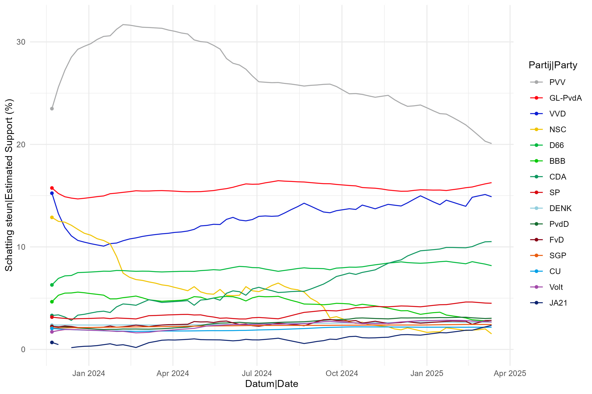
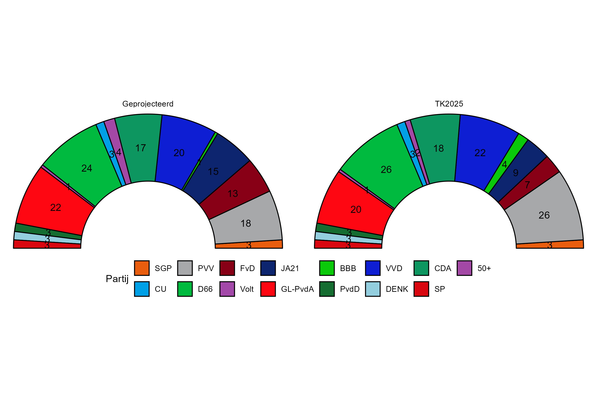
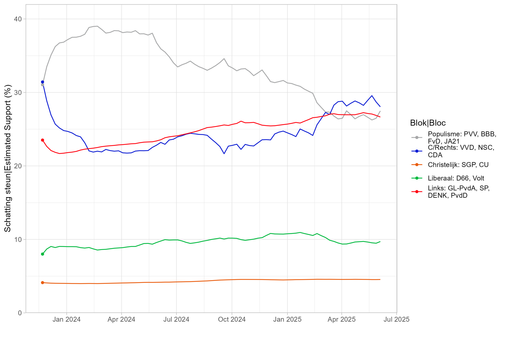
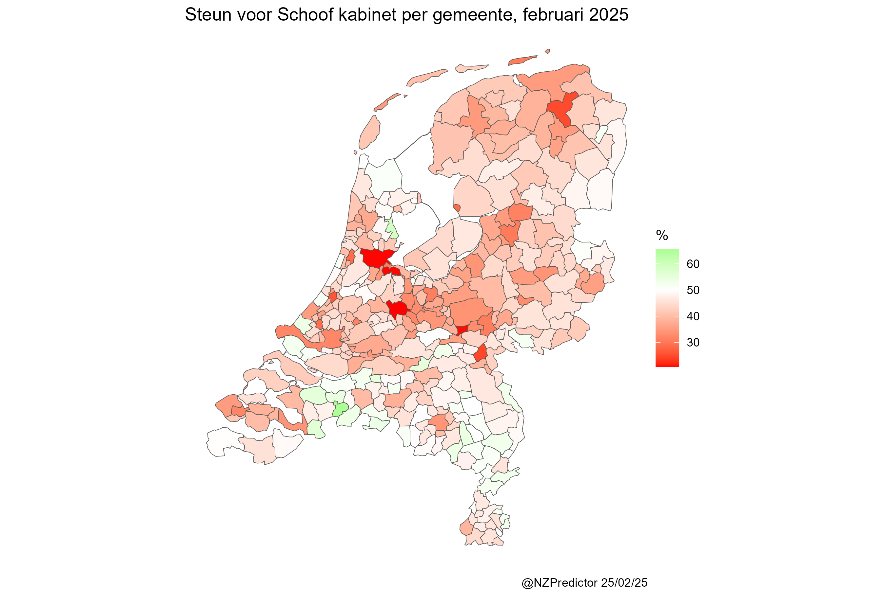

Last Updated: 25 February 2025



Votes for the four government parties PVV,VVD,NSC and BBB by municipality

Below are the ten coalitions with the highest probability of being possible-see the Methodology page for more details
Source for gemeente boundaries: cbsodataR package